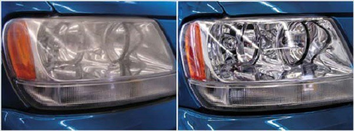
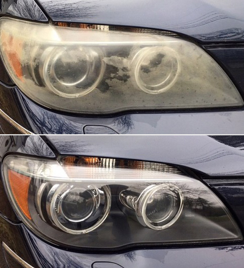

WipeNew – это средство, предназначенное для полировки фар автомобиля.
WipeNew бережно восстановит фары до первоначального состояния без вреда для прочности. Этот метод многократно эффективнее профессиональной абразивной полировки фары на СТО, которая влечет за собой снятие защитного слоя с фары со снижением прочности фары.
Все водители замечают, что с течением времени фары тускнеют и хуже светят. Это не зависит от ламп. Фары покрываются микротрещинами и становятся бледными. Причина в пластике фар, поверхность которого ежедневно повреждается химикатами, реагентами, страдает от попадания солнечного света и мелких камней. WipeNew – это средство, предназначенное для химического восстановления прозрачности фар автомобиля. Специальный состав позволяет за 15-20 минут вернуть фарам прозрачность.
Реальный способ сэкономить на замене ламп и осветительных приборов автомобиля – их восстановление. WipeNew помогает заметно увеличить срок службы пластика и вернуть ему прозрачность. Автолюбители со временем замечают, что даже целая фара начинает светить все хуже, заметно сокращается обзор в темное время суток. Это увеличивает вероятность ДТП, создает опасность для пешеходов без светоотражающих элементов, передвигающихся по обочине.
Набор для восстановления фар улучшит обзор при движении в ночное время. Он позволит сэкономить деньги и нервы. Используя химическое восстановление фар, Вы приобретаете спокойствие и уверенность.
Используйте WipeNew при необходимости обновить фары. Восстановление внешнего слоя не составит особого труда. Нанесли, протерли, наслаждаетесь.
При нанесении химическое средство для восстановления фар WipeNew заполняет микротрещинки на поверхности. Высыхая образует прозрачную пленку, стойкую к атмосферным воздействиям.
В результате полупрозрачный пластик фары становится прозрачным, лучше пропускает свет и улучшается обзор при движении в ночное время суток.
В отличие от обычного полироля, WipeNew не просто наводит блеск на обрабатываемой поверхности, а выравнивает ее, заполняя трещинки и царапины. При этом восстанавливается прозрачность пластика.